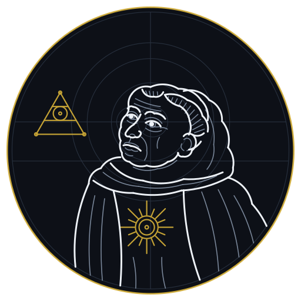

St. Thomas Aquinas¶

St. Thomas Aquinas, O.P. (1225–1274) forged the classical synthesis between Aristotelian logic and Euclidean geometry, explaining how the mind abstracts mathematical form from sensible change into intelligible matter (materia intelligibilis) and why every geometric proof terminates in constructive imagination. This bilingual Latin–English archive gathers 37 unabridged lectures and articles across six major works—paired with an introductory Prooemium, critical apparatus from the Leonine, Marietti, and Decker editions, and interactive vector figures.
Books in This Collection¶

Treatise I · c. 1257–1259 · 6 Articles · 4 Tracks
Commentary on Boethius’s On the Trinity (Questions V–VI) — Aquinas’s foundational division of speculative science: distinguishing mathematical abstractio formae from metaphysical separatio, defining materia intelligibilis, and showing why mathematical judgment terminates at the imagination.

Treatise II · c. 1270–1272 · 11 Lectures · 4 Tracks
Commentary on Aristotle’s Posterior Analytics — An exposition of mathematical demonstration (apodeixis): why mathematics holds the highest place in demonstrative certitude, how common conceptions relate to postulates, and how universal principles arise from sense and intellect.

Treatise V · c. 1270–1272 · 5 Lectures · 4 Tracks
Commentary on Aristotle’s Metaphysics — Individual versus common intelligible matter, mathematical intermediates, and the landmark analysis of geometric discovery: geometers bring hidden truths to light by dividing figures in act (Euclid I.32 and III.31).
On the Soul (5 Lectures, c. 1267–1268)
Why human understanding turns continually to phantasms (conversio ad phantasmata), spatial continuum versus physical body, and the hand as organ of organs.
Physics & On the Heavens (6 Lectures, c. 1268–1273)
Why mathematical abstraction involves no falsehood (abstrahentium non est mendacium), immobile place, and why a continuum cannot be composed of indivisible points.
Summa Theologiae & Disputed Questions (4 Articles)
Ipsum Esse, the geometer’s infinite line, turning to phantasms in the Summa, and the origin of indemonstrable first principles in De Potentia and De Veritate.
Key Features¶
Critical Latin & Synchronized Tracks
Every section aligns the critical Latin text (Leonine, Decker, and Marietti editions) with a faithful English translation, structural summary, and noetic-geometric commentary.
78-Locus Hoenen Concordance
The Master Concordance maps 100% of the Thomistic citation keys in Peter Hoenen S.J.’s De Noetica Geometriae (1954) to Aristotle, Euclid, and GEOMETOR.
Geometric Noetics Apparatus
Begin with the Prooemium, browse 36 foundational scholastic concepts in the Technical Glossary, or trace 113 sources in the Bibliography.
Reference & Project¶
Scholarly Apparatus
Introduction (Prooemium) — Aquinas’s philosophy of mathematical science
Master Concordance — 78-locus Hoenen–Aquinas–Aristotle–Euclid matrix
Technical Glossary, People, & Bibliography — 36 scholastic terms and 113 cited editions